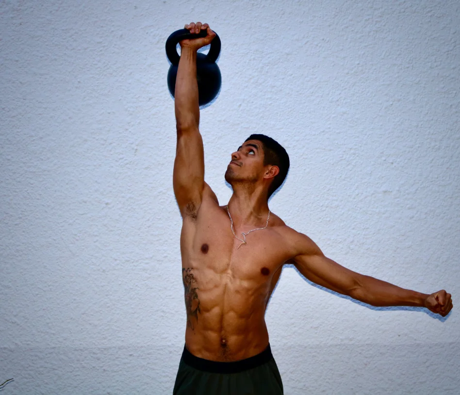
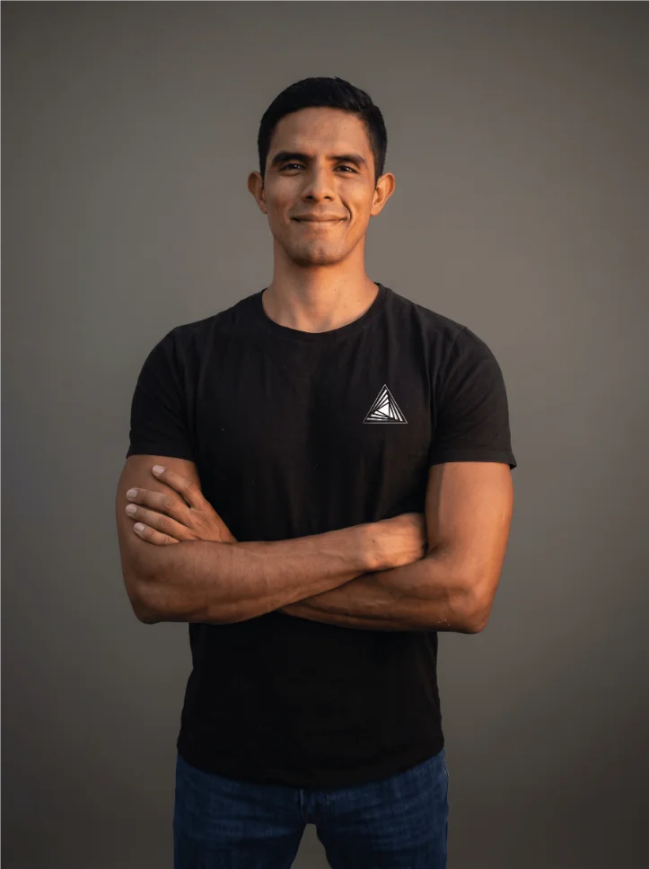
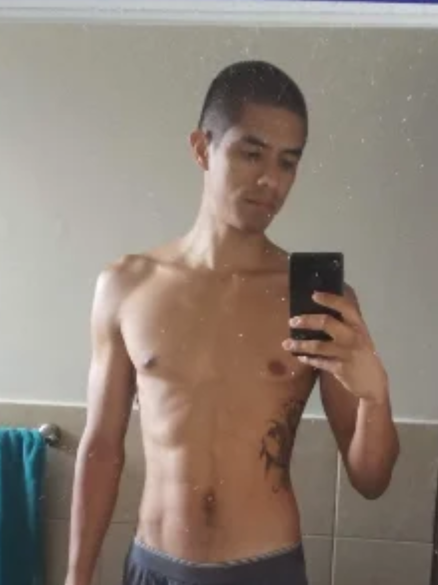
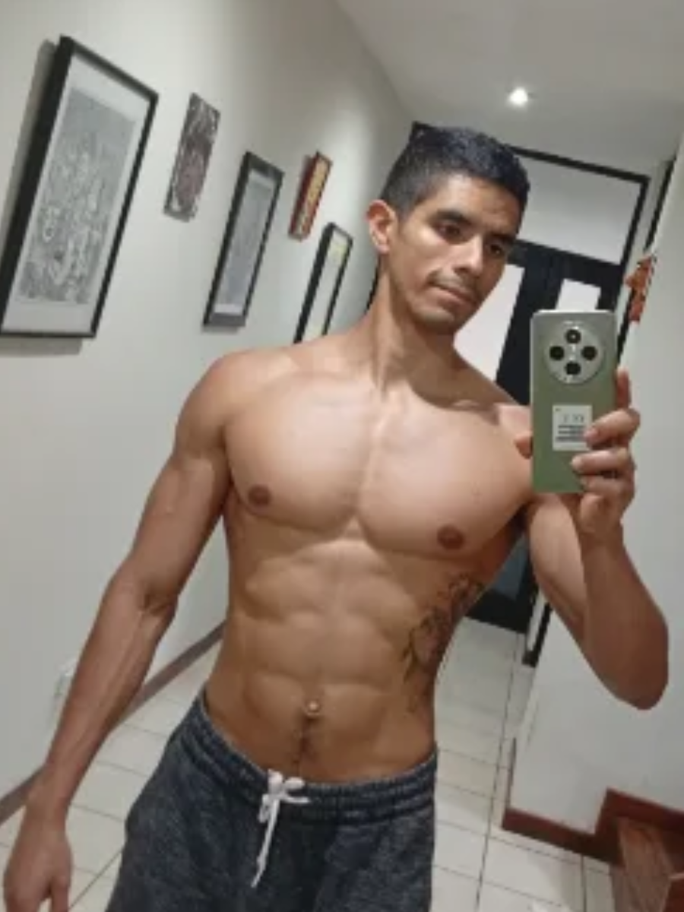

¿Abrumado?
Quieres comer saludable, hacer ejercicio, manejar tu estrés, mejorar tu relación, mejorar tu sueño, etc. Tantos cambios, ¿sabes cuál será el de mayor impacto?
Mentoría de estilo de vida
Mentoría 1a1 y grupales para que empieces a crear un estilo de vida alineado a tus metas.

Comida que te dé energía
Ejercicio que te haga sentir fuerte
Salud que todos notan
¿Te identificas con estas dificultades?
Quieres comer saludable, hacer ejercicio, manejar tu estrés, mejorar tu relación, mejorar tu sueño, etc. Tantos cambios, ¿sabes cuál será el de mayor impacto?
Un experto dice una cosa, otro dice lo opuesto. ¿Sabes reconocer cuál es la opción ideal para ti?
¿Tienes miedo de enfocarte en tu salud y perder lo que has logrado?

Tu mentor
David Meneses, mentor de estilo de vida certificado.
Lograr un cuerpo que se vea bien es suficientemente difícil — que sea de manera saludable puede parecer aún más retador. Requiere tener presente más factores que solo el peso y el espejo, muchos que dependen por completo de tu estilo de vida único. Por suerte, hay una solución garantizada.


Como cualquier cosa, lograr un estilo de vida saludable se trata de hacer las cosas correctas, de la forma correcta, en los momentos correctos, todo apegado a tu propio estilo de vida.
Adivinar la forma de avanzar, que es lo que la mayoría hace, es una receta para el desastre, pero seguir la guía de alguien que ya lo ha hecho y te puede mostrar el camino es una receta para el éxito. Yo he estado allí, he hecho eso, y me encantaría mostrarte el camino.
Programas
3 meses
En mi programa de 3 meses, Crea tu Armadura, te guiaré personalmente por el camino de llevar tu cuerpo al siguiente nivel. Vamos a superar tus mayores obstáculos a la hora de entrenar y crear hábitos alimenticios, haremos el mapa de un plan según tus prioridades, y ejecutaremos una estrategia para crear un cuerpo que no solo sea saludable sino que también se vea como quieres. Para conocer todos los detalles y aplicar a uno de los puestos disponibles, haz click en el botón de abajo.
Ver detalles →3 meses
Este es el programa de 3 meses que necesitas si tu vida está en una encrucijada. Tus malos hábitos ya no solo los sientes, los puedes ver en tu desempeño laboral, tu relación con tu pareja, o tu falta de pareja, en el ejemplo que le das a tus hijos, y en el miedo que está rodeando la idea de no tomar acción. Te estaré guiando como tu Gandalf personal. Este programa no solo aborda movimiento y nutrición. También nos enfocamos en desarrollar más y mejores habilidades para manejar tu estrés, en mejorar tus habilidades de comunicación para mejorar tus relaciones interpersonales, ayudarte en las dinámicas de pareja (tanto para conocer a una, como para mejorar la que ya tienes), reconocer tu energía sexual como un reflejo importante de tu estado de salud, e integrar todos estos cambios en un estilo de vida que pueda ir creciendo conforme tú también lo hagas.
Ver detalles →2 meses
En este programa de 2 meses, Muévete como un Héroe, te guiaré en persona por el proceso de ganar confianza en cómo se mueve tu cuerpo. Vamos a trabajar en superar obstáculos de dolor crónico, recuperación de lesiones, recuperación de movilidad, estabilidad y fuerza. Todo estratégicamente planeado para que termines el programa sintiéndote más confiado en lo que eres capaz de lograr cuando trabajas con un plan diseñado específicamente para ti. Para conocer todos los detalles y aplicar a uno de los pocos puestos disponibles, haz click en el botón de abajo.
Ver detalles →3 meses
En este programa de 3 meses, Del Nivel 0 al 3, te estaré guiando para romper el ciclo de intentar cambios de estilo de vida solo para que se pierdan al primer inconveniente. Te enseñaré las herramientas clave que te van a permitir reconocer qué programas o qué consejos serán útiles para ti y cuáles no son adecuados para el momento en el que estás. Cada mes logramos un nivel, un progreso basado específicamente en tu autoconocimiento, no en una métrica generalizada y superficial.
Próximo cohorte en Enero 2027Testimonios
“Cuando empecé con vos pesaba 210 lbs y ya estaba desesperado, no podía correr sin empezar a marearme. Hoy estoy pesando 158 lbs, sintiéndome bien conmigo mismo, con un mejor desempeño, con más músculo, y pudiendo jugar con mi hijo sin cansarme.”
“Las herramientas para escuchar mi cuerpo y ver cómo reacciona me permiten adaptarme en distintos momentos de mi vida. Muchos de mis dolores físicos han desaparecido y mi hombro que creía lesionado ahora tiene fuerza que nunca creí posible.”
“Muy buena experiencia, siento que ha sido una oportunidad de conocerse a sí mismo para intentar llevar un estilo de vida saludable sin la necesidad de caer en restricciones o dietas estrictas que a la larga suelen ser difíciles de llevar o aburridas.”
Tres pequeños pasos para crear tu nuevo estilo de vida
Haz click en el botón de abajo para agendar tu llamada gratuita y descubrir los pasos que más te puedan funcionar.
Juntos vamos a desarrollar la estrategia que mejor se apegue a tu estilo de vida.
Yo estaré allí cada paso del camino conforme pones el plan en acción.
Hasta ahora, 90% de mis clientes han visto cambios radicales en su vida en el primer mes.
Construye esa armadura que refleje de qué estás hecho. No solo se va a ver bien, se va a sentir bien.
¿Es para ti?
Qué incluye
Otros programas
No hay más tiempo que perder. Tú sabes que necesitas un cambio, y yo sé cómo guiarte para lograrlo.
Ver detalles →Este es el programa de movimiento que sabe que no todos quieren ser fisicoculturistas. Pero lo que todos sí quieren es sentirse fuertes, ágiles y capaces de reaccionar ante cualquier emergencia. Eso no quiere decir que no se pueda lograr sin verse MUY bien.
Ver detalles →No hay más tiempo que perder. Tú sabes que necesitas un cambio, y yo sé cómo guiarte para lograrlo.
¿Es para ti?
Qué incluye
Otros programas
Construye esa armadura que refleje de qué estás hecho. No solo se va a ver bien, se va a sentir bien.
Ver detalles →Este es el programa de movimiento que sabe que no todos quieren ser fisicoculturistas. Pero lo que todos sí quieren es sentirse fuertes, ágiles y capaces de reaccionar ante cualquier emergencia. Eso no quiere decir que no se pueda lograr sin verse MUY bien.
Ver detalles →Este es el programa de movimiento que sabe que no todos quieren ser fisicoculturistas. Pero lo que todos sí quieren es sentirse fuertes, ágiles y capaces de reaccionar ante cualquier emergencia. Eso no quiere decir que no se pueda lograr sin verse MUY bien.
¿Es para ti?
Otros programas
Construye esa armadura que refleje de qué estás hecho. No solo se va a ver bien, se va a sentir bien.
Ver detalles →No hay más tiempo que perder. Tú sabes que necesitas un cambio, y yo sé cómo guiarte para lograrlo.
Ver detalles →